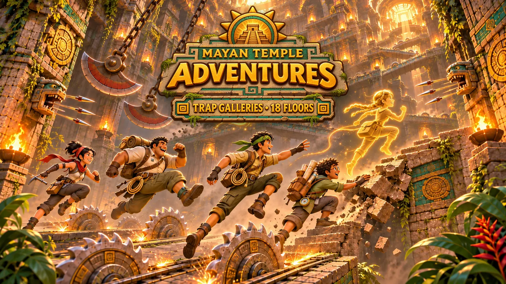

Standard
Climb
Ein Checkpoint an jeder Stufe, beliebig viele Stürze, und du machst an deiner höchsten Stufe weiter.

Start / Spieltypen
Spieltyp · Deathrun
Achtzehn Fallenstufen im Inneren des Tempels hinauf. Keine Gegner, keine Waffen, nur Timing.
Kletterer liefern sich ein Rennen mit dem lebenden Tempel. Achtzehn Stufen, nur aus seinen Fallen und beweglichen Plattformen gebaut, führen von den überfluteten Fundamenten bis unter den offenen Himmel über dem Gipfel.
Es gibt keine Gegner, keine Waffen und keine Rätsel, nur Timing. K'in warnt vor jeder Stufe und hat nach jedem Sturz trockene Worte übrig. Jede Galerie übernimmt das Aussehen einer Stufe des Aufstiegs, damit ist diese Insel auch der erste Blick auf die Hauptinsel.

Richtzeit
Ein goldener Geist von Kaya läuft jede Stufe in einem festen Tempo. Ins Ziel kommen bringt Bronze, ohne Tod ins Ziel kommen Silber, und wer ihr Echo schlägt, holt Gold.
So ist Kaya im Bild, ohne dass jemand sie spielen muss.

Der Gipfel
Wer oben ankommt, bekommt sein Zeichen in ein Wandbild auf dem Gipfel gemeißelt, einen kleineren Zwilling des Geisterwandbilds auf der Hauptinsel. Der erste Gipfel bringt außerdem die Kletterer-Brille.
Sechs Galerien
| Galerie | Stufen | Wovor du dich hütest |
|---|---|---|
| I · Überflutete Fundamente | The Shell Run, Treibende Stämme, Wurzelschwung | Trittsteine, Stachelleisten, treibende Stämme, Lianenschwünge |
| II · Fallengalerien | Sägebahnen, Pfeilkolonnade, Einstürzende Treppe | Sägen auf Schienen, Pfeilbahnen, bröckelnde Treppen, Felsbrocken |
| III · Wandernde Gewölbe | Wippengrube, Phasenbrücken, Kalenderbrunnen | Wippen, verschwindende Plattformen, rotierende Scheiben |
| IV · Elementarheiligtümer | Lavakanäle, Zerbrochene Wälle, Steigende Zisterne | brennende Brücken, Windböen, steigendes Wasser |
| V · Tiefen der Täuschung | Trugböden, Strahlenlabyrinth, Geisterjagd | Trugkacheln, kreisende Strahlen, der Wächtergeist |
| VI · Erhebung | Elementarer Spießrutenlauf, Fallenschmelztiegel, Die Himmelstreppe | alle Gefahren auf einmal, dann die Terrassen unter freiem Himmel |
Modi
Standard
Ein Checkpoint an jeder Stufe, beliebig viele Stürze, und du machst an deiner höchsten Stufe weiter.
Für Könner
Checkpoints nur am Anfang jeder Galerie und eine Medaille für den Weg nach oben.
Gegen die Uhr
Der ganze Aufstieg auf Zeit, mit Zeiten pro Stufe und Kayas Echo als Richtzeit.
Gemeinsam
Bis zu 16 Kletterer starten gemeinsam. Wer zuerst die Wand der Kletterer erreicht, gewinnt.
Jeden Tag
Jeden Tag eine Wendung für alle: schnellere Stacheln, kürzere Plattformen, eine Stufe im Nebel.